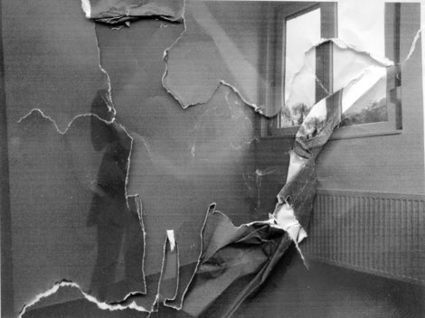

<div class="background-container">
    
</div>
<div class="content">
    
</div>
<button class="fixed-button" (click)="goBack()">
    <fa-icon [icon]="faArrowLeft" class="back-arrow"></fa-icon>
    <span>Volver</span>
</button>